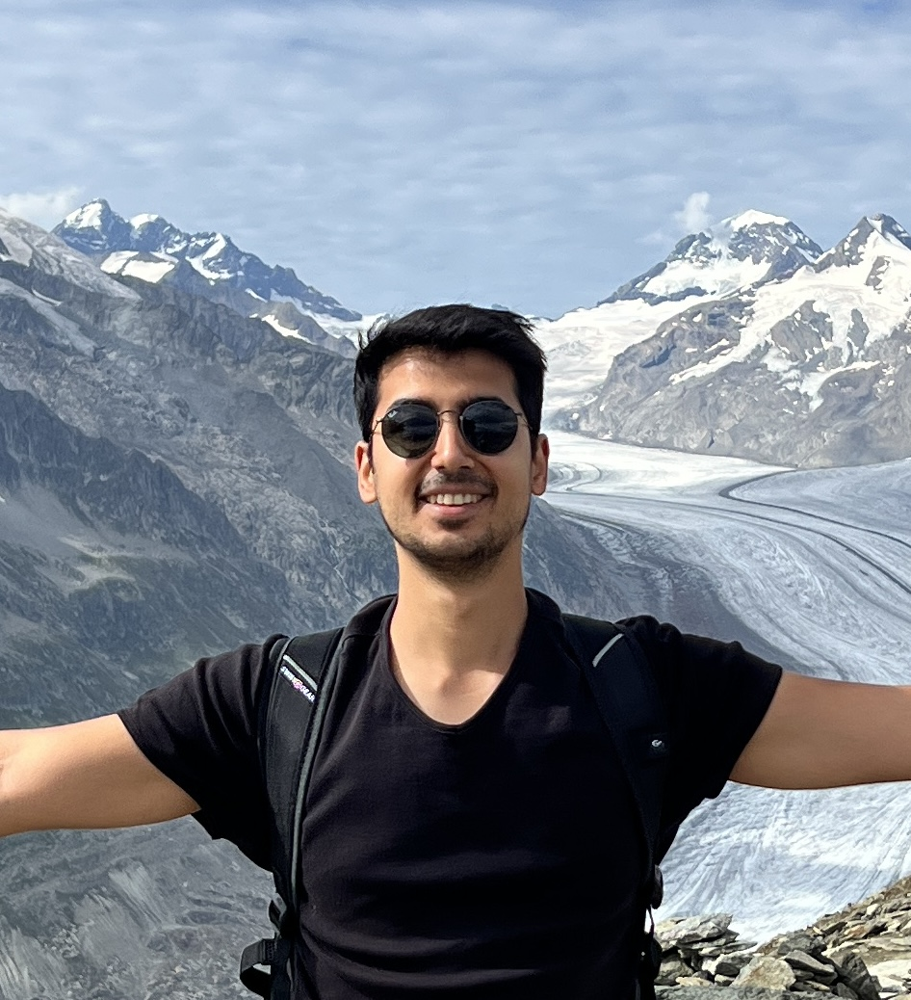

<title>Ali Kavis</title>
<link rel="stylesheet" href="https://fonts.googleapis.com/css2?family=Lora:ital,wght@0,400;0,500;0,600;1,400&family=Inter:wght@300;400;500;600&display=swap">

<style>
/* Layout: single-column, max 860px, sticky nav + clean sections */
:root {
  --bg:       #ffffff;
  --surface:  #f5f5f7;
  --fg:       #1c1c1e;
  --muted:    #6b6b74;
  --accent:   #1a52a3;
  --accent-h: #0f3d80;
  --border:   #dddde3;
  --sans:     'Inter', system-ui, -apple-system, sans-serif;
  --serif:    'Lora', Georgia, 'Times New Roman', serif;
}

@media (prefers-color-scheme: dark) {
  :root:not([data-theme="light"]) {
    --bg:       #0d0d10;
    --surface:  #18181c;
    --fg:       #f0f0f4;
    --muted:    #9a9aa4;
    --accent:   #5fa5e8;
    --accent-h: #80bdf0;
    --border:   #2a2a34;
    color-scheme: dark;
  }
}

:root[data-theme="dark"] {
  --bg:       #0d0d10;
  --surface:  #18181c;
  --fg:       #f0f0f4;
  --muted:    #9a9aa4;
  --accent:   #5fa5e8;
  --accent-h: #80bdf0;
  --border:   #2a2a34;
  color-scheme: dark;
}

*, *::before, *::after { box-sizing: border-box; }

body {
  background: var(--bg);
  color: var(--fg);
  font-family: var(--sans);
  font-size: 16px;
  line-height: 1.7;
  margin: 0;
}

a { color: var(--accent); text-decoration: none; }
a:hover { color: var(--accent-h); text-decoration: underline; }
a:focus-visible { outline: 2px solid var(--accent); outline-offset: 2px; border-radius: 2px; }

/* ── Navigation ───────────────────────────────────── */
.site-header {
  position: sticky;
  top: env(safe-area-inset-top, 0px);
  z-index: 100;
  background: var(--bg);
  border-bottom: 1px solid var(--border);
}

.nav-inner {
  max-width: 860px;
  margin-inline: auto;
  padding-inline: 28px;
  height: 54px;
  display: flex;
  align-items: center;
  justify-content: space-between;
  gap: 24px;
}

.nav-name {
  font-family: var(--serif);
  font-weight: 500;
  font-size: 1.05rem;
  color: var(--fg);
  white-space: nowrap;
  text-decoration: none;
}
.nav-name:hover { color: var(--accent); text-decoration: none; }

.nav-links {
  display: flex;
  gap: 22px;
  list-style: none;
  margin: 0;
  padding: 0;
}

.nav-links a {
  color: var(--muted);
  font-size: 0.8rem;
  font-weight: 500;
  letter-spacing: 0.07em;
  text-transform: uppercase;
  transition: color 0.12s;
}
.nav-links a:hover { color: var(--accent); text-decoration: none; }

/* ── Main ─────────────────────────────────────────── */
.site-main {
  max-width: 860px;
  margin-inline: auto;
  padding-inline: 28px;
  padding-block: 0 80px;
}

/* ── Hero ─────────────────────────────────────────── */
.hero {
  display: flex;
  gap: 40px;
  align-items: flex-start;
  padding-block: 60px 52px;
  border-bottom: 1px solid var(--border);
}

.hero-avatar {
  flex-shrink: 0;
  width: 92px;
  height: 92px;
  border-radius: 50%;
  background: var(--surface);
  border: 1.5px solid var(--border);
  display: flex;
  align-items: center;
  justify-content: center;
  font-family: var(--serif);
  font-size: 1.6rem;
  font-weight: 500;
  color: var(--accent);
  overflow: hidden;
  user-select: none;
}

.hero-avatar img {
  width: 100%;
  height: 100%;
  object-fit: cover;
  border-radius: 50%;
}

.hero-info { flex: 1; min-width: 0; }

h1.hero-name {
  font-family: var(--serif);
  font-size: 2.25rem;
  font-weight: 600;
  line-height: 1.15;
  margin: 0 0 6px;
  text-wrap: balance;
  color: var(--fg);
}

.hero-role {
  font-size: 1rem;
  color: var(--muted);
  margin: 0 0 3px;
  font-weight: 400;
}

.hero-inst {
  font-size: 0.975rem;
  margin: 0 0 22px;
  color: var(--fg);
}

.hero-links {
  display: flex;
  flex-wrap: wrap;
  gap: 8px;
}

.chip {
  display: inline-flex;
  align-items: center;
  gap: 5px;
  font-size: 0.77rem;
  font-weight: 500;
  letter-spacing: 0.04em;
  text-transform: uppercase;
  padding: 5px 13px;
  border: 1px solid var(--border);
  border-radius: 100px;
  color: var(--fg);
  background: var(--surface);
  transition: border-color 0.12s, color 0.12s, background 0.12s;
  text-decoration: none;
}
.chip:hover {
  color: var(--accent);
  border-color: var(--accent);
  background: var(--bg);
  text-decoration: none;
}
.chip svg { flex-shrink: 0; }

/* ── Content sections ─────────────────────────────── */
.content-section {
  padding-block: 56px;
  border-bottom: 1px solid var(--border);
}
.content-section:last-of-type { border-bottom: none; }

.eyebrow {
  font-size: 0.68rem;
  font-weight: 600;
  letter-spacing: 0.13em;
  text-transform: uppercase;
  color: var(--accent);
  margin: 0 0 20px;
}

/* ── About ────────────────────────────────────────── */
.about-text { max-width: 640px; }
.about-text p { margin: 0 0 16px; line-height: 1.8; }
.about-text p:last-child { margin-bottom: 0; }

/* ── Research ─────────────────────────────────────── */
.research-intro {
  max-width: 620px;
  color: var(--muted);
  margin: 0 0 32px;
  line-height: 1.75;
}

.research-grid {
  display: grid;
  grid-template-columns: 1fr 1fr;
  gap: 16px;
}

.research-card {
  background: var(--surface);
  border: 1px solid var(--border);
  border-radius: 8px;
  padding: 20px 22px;
}

.research-card h3 {
  font-family: var(--serif);
  font-size: 0.975rem;
  font-weight: 600;
  margin: 0 0 8px;
  color: var(--fg);
  text-wrap: balance;
}

.research-card p {
  font-size: 0.88rem;
  color: var(--muted);
  margin: 0;
  line-height: 1.65;
}

/* ── Publications ─────────────────────────────────── */
.pub-count {
  color: var(--muted);
  font-size: 0.875rem;
  margin: 0 0 36px;
}

.pub-year-group { margin-bottom: 36px; }
.pub-year-group:last-child { margin-bottom: 0; }

.pub-year-label {
  font-size: 0.75rem;
  font-weight: 600;
  letter-spacing: 0.09em;
  color: var(--muted);
  text-transform: uppercase;
  padding-bottom: 10px;
  border-bottom: 1px solid var(--border);
  margin-bottom: 0;
}

.pub-entry {
  padding-block: 16px;
  border-bottom: 1px solid var(--border);
  display: flex;
  flex-direction: column;
  gap: 4px;
}
.pub-entry:last-child { border-bottom: none; }

/* Title as a subtle link — looks like text, acts like a link */
.pub-title-link {
  font-size: 0.95rem;
  font-weight: 500;
  line-height: 1.45;
  color: var(--fg);
  text-decoration: none;
  display: block;
}
.pub-title-link:hover {
  color: var(--accent);
  text-decoration: underline;
  text-underline-offset: 2px;
}

.pub-authors-line {
  font-size: 0.855rem;
  color: var(--muted);
  margin: 0;
  line-height: 1.4;
}

.pub-authors-line strong {
  color: var(--fg);
  font-weight: 600;
}

.pub-meta {
  display: flex;
  align-items: center;
  gap: 8px;
  flex-wrap: wrap;
}

.pub-venue-name {
  font-size: 0.85rem;
  font-style: italic;
  color: var(--muted);
}

.badge {
  font-size: 0.7rem;
  font-weight: 600;
  letter-spacing: 0.04em;
  padding: 1px 8px;
  border-radius: 3px;
  background: rgba(26, 82, 163, 0.1);
  color: var(--accent);
  font-style: normal;
}

/* Small arXiv/paper link chip */
.pub-ext-link {
  font-size: 0.75rem;
  font-weight: 500;
  color: var(--accent);
  text-decoration: none;
  opacity: 0.8;
  letter-spacing: 0.01em;
}
.pub-ext-link:hover {
  opacity: 1;
  text-decoration: underline;
  text-underline-offset: 2px;
  color: var(--accent-h);
}

@media (prefers-color-scheme: dark) {
  :root:not([data-theme="light"]) .badge {
    background: rgba(95, 165, 232, 0.15);
  }
}
:root[data-theme="dark"] .badge {
  background: rgba(95, 165, 232, 0.15);
}

/* ── Contact ──────────────────────────────────────── */
.contact-table {
  display: grid;
  grid-template-columns: auto 1fr;
  gap: 12px 28px;
  align-items: baseline;
  max-width: 520px;
}

.contact-key {
  font-size: 0.75rem;
  font-weight: 600;
  letter-spacing: 0.08em;
  text-transform: uppercase;
  color: var(--muted);
  white-space: nowrap;
}

.contact-val {
  font-size: 0.975rem;
  color: var(--fg);
  line-height: 1.6;
}

.contact-note {
  margin-top: 28px;
  max-width: 460px;
  font-size: 0.875rem;
  color: var(--muted);
  line-height: 1.7;
}

/* ── Footer ───────────────────────────────────────── */
.site-footer {
  max-width: 860px;
  margin-inline: auto;
  padding-inline: 28px;
  padding-block: 28px;
  border-top: 1px solid var(--border);
  font-size: 0.8rem;
  color: var(--muted);
}

/* ── Responsive ───────────────────────────────────── */
@media (max-width: 620px) {
  .nav-inner { padding-inline: 18px; }
  .site-main { padding-inline: 18px; }
  .site-footer { padding-inline: 18px; }
  .hero { flex-direction: column; gap: 18px; padding-block: 40px 36px; }
  h1.hero-name { font-size: 1.8rem; }
  .hero-avatar { width: 76px; height: 76px; font-size: 1.35rem; }
  .research-grid { grid-template-columns: 1fr; }
  .nav-links { gap: 14px; }
  .nav-links a { font-size: 0.75rem; }
  .contact-table { grid-template-columns: 1fr; gap: 4px; }
  .contact-key { margin-top: 10px; }
  .contact-key:first-child { margin-top: 0; }
}

@media (prefers-reduced-motion: reduce) {
  *, *::before, *::after { transition: none !important; animation: none !important; }
}
</style>

<!-- ── Navigation ──────────────────────────────────────────── -->
<header class="site-header" role="banner">
  <div class="nav-inner">
    <a href="#" class="nav-name">Ali Kavis</a>
    <nav aria-label="Site navigation">
      <ul class="nav-links">
        <li><a href="#about">About</a></li>
        <li><a href="#research">Research</a></li>
        <li><a href="#publications">Publications</a></li>
        <li><a href="#contact">Contact</a></li>
      </ul>
    </nav>
  </div>
</header>

<!-- ── Main content ────────────────────────────────────────── -->
<main class="site-main">

  <!-- Hero -->
  <div class="hero" id="top">
    <div class="hero-avatar">
      
    </div>
    <div class="hero-info">
      <h1 class="hero-name">Ali Kavis</h1>
      <p class="hero-role">Senior Researcher</p>
      <p class="hero-inst">Optimization &amp; Decision Intelligence Group · ETH Zürich</p>
      <div class="hero-links">
        <a class="chip" href="https://scholar.google.com/citations?user=sPrPq6oAAAAJ" target="_blank" rel="noopener" aria-label="Google Scholar profile">
          <svg width="13" height="13" viewBox="0 0 24 24" fill="none" stroke="currentColor" stroke-width="2" stroke-linecap="round" stroke-linejoin="round" aria-hidden="true"><path d="M2 3h6a4 4 0 0 1 4 4v14a3 3 0 0 0-3-3H2z"/><path d="M22 3h-6a4 4 0 0 0-4 4v14a3 3 0 0 1 3-3h7z"/></svg>
          Scholar
        </a>
        <a class="chip" href="https://github.com/alikavis" target="_blank" rel="noopener" aria-label="GitHub profile">
          <svg width="13" height="13" viewBox="0 0 24 24" fill="currentColor" aria-hidden="true"><path d="M12 2C6.477 2 2 6.484 2 12.017c0 4.425 2.865 8.18 6.839 9.504.5.092.682-.217.682-.483 0-.237-.008-.868-.013-1.703-2.782.605-3.369-1.343-3.369-1.343-.454-1.158-1.11-1.466-1.11-1.466-.908-.62.069-.608.069-.608 1.003.07 1.531 1.032 1.531 1.032.892 1.53 2.341 1.088 2.91.832.092-.647.35-1.088.636-1.338-2.22-.253-4.555-1.113-4.555-4.951 0-1.093.39-1.988 1.029-2.688-.103-.253-.446-1.272.098-2.65 0 0 .84-.27 2.75 1.026A9.564 9.564 0 0112 6.844c.85.004 1.705.115 2.504.337 1.909-1.296 2.747-1.027 2.747-1.027.546 1.379.202 2.398.1 2.651.64.7 1.028 1.595 1.028 2.688 0 3.848-2.339 4.695-4.566 4.943.359.309.678.92.678 1.855 0 1.338-.012 2.419-.012 2.747 0 .268.18.58.688.482A10.019 10.019 0 0022 12.017C22 6.484 17.522 2 12 2z"/></svg>
          GitHub
        </a>
        <a class="chip" href="mailto:ali.kavis@inf.ethz.ch" aria-label="Send email">
          <svg width="13" height="13" viewBox="0 0 24 24" fill="none" stroke="currentColor" stroke-width="2" stroke-linecap="round" stroke-linejoin="round" aria-hidden="true"><rect x="2" y="4" width="20" height="16" rx="2"/><path d="m22 7-8.97 5.7a1.94 1.94 0 0 1-2.06 0L2 7"/></svg>
          Email
        </a>
        <a class="chip" href="https://orcid.org/0000-0003-1438-6269" target="_blank" rel="noopener" aria-label="ORCID profile">
          <svg width="13" height="13" viewBox="0 0 24 24" fill="currentColor" aria-hidden="true"><path d="M12 0C5.372 0 0 5.372 0 12s5.372 12 12 12 12-5.372 12-12S18.628 0 12 0zM7.369 4.378c.525 0 .947.431.947.947s-.422.947-.947.947a.95.95 0 0 1-.947-.947c0-.525.422-.947.947-.947zm-.722 3.038h1.444v10.041H6.647V7.416zm3.562 0h3.9c3.712 0 5.344 2.653 5.344 5.025 0 2.578-2.016 5.016-5.325 5.016h-3.919V7.416zm1.444 1.303v7.444h2.297c3.272 0 3.872-2.412 3.872-3.722 0-2.016-1.266-3.722-3.884-3.722h-2.285z"/></svg>
          ORCID
        </a>
        <a class="chip" href="https://www.researchgate.net/profile/Ali-Kavis" target="_blank" rel="noopener" aria-label="ResearchGate profile">
          <svg width="13" height="13" viewBox="0 0 24 24" fill="none" stroke="currentColor" stroke-width="2" stroke-linecap="round" stroke-linejoin="round" aria-hidden="true"><circle cx="12" cy="12" r="10"/><path d="M9.09 9a3 3 0 0 1 5.83 1c0 2-3 3-3 3"/><path d="M12 17h.01"/></svg>
          ResearchGate
        </a>
      </div>
    </div>
  </div>

  <!-- About -->
  <section class="content-section" id="about" aria-labelledby="about-heading">
    <p class="eyebrow" id="about-heading">About</p>
    <div class="about-text">
      <p>I am a Senior Researcher at the Optimization &amp; Decision Intelligence (ODI) Group at
        <a href="https://inf.ethz.ch/" target="_blank" rel="noopener">ETH Zürich</a>,
        led by <a href="https://niaohe.ece.illinois.edu/" target="_blank" rel="noopener">Niao He</a>.
        In August 2027, I will be joining the <a href="https://cs.au.dk/" target="_blank" rel="noopener">Department of Computer Science</a>
        at <a href="https://www.au.dk/en/" target="_blank" rel="noopener">Aarhus University</a>
        as a tenure-track Assistant Professor.
        I received my PhD from <a href="https://www.epfl.ch/" target="_blank" rel="noopener">EPFL</a>
        in August 2023, where I was advised by
        <a href="https://cevher.github.io/" target="_blank" rel="noopener">Volkan Cevher</a>.
        Prior to joining ETH, I was a Postdoctoral Fellow at
        <a href="https://www.utexas.edu/" target="_blank" rel="noopener">UT Austin</a>,
        hosted by <a href="https://www.ece.utexas.edu/people/faculty/aryan-mokhtari" target="_blank" rel="noopener">Aryan Mokhtari</a>
        and <a href="https://www.ece.utexas.edu/people/faculty/sujay-sanghavi" target="_blank" rel="noopener">Sujay Sanghavi</a>,
        affiliated with the <a href="https://ifml.institute/" target="_blank" rel="noopener">IFML</a>
        and the <a href="https://tripods.utexas.edu/" target="_blank" rel="noopener">TRIPODS Institute</a>.
      </p>
      <p>My research centers on the design and analysis of <strong>universal and parameter-free algorithms</strong>
        for stochastic optimization. I aim to build methods that work well across diverse problem settings
        without requiring practitioners to hand-tune hyperparameters such as learning rates or noise estimates.
        My work spans first-order and second-order methods, extensions to games and minimax problems,
        and applications in deep learning.
      </p>
    </div>
  </section>

  <!-- Research -->
  <section class="content-section" id="research" aria-labelledby="research-heading">
    <p class="eyebrow" id="research-heading">Research</p>
    <p class="research-intro">I work at the intersection of optimization theory and machine learning, studying how to design algorithms that are both optimal in theory and practical to deploy — without hand-tuning.</p>
    <div class="research-grid">
      <div class="research-card">
        <h3>Stochastic Optimization</h3>
        <p>How do gradient-based algorithms behave under noise — and what convergence guarantees can we prove without overly optimistic assumptions? I study both first- and second-order methods in non-convex and constrained settings, including high-probability bounds and almost-sure convergence.</p>
      </div>
      <div class="research-card">
        <h3>Universal &amp; Parameter-Free Methods</h3>
        <p>Most algorithms require the practitioner to know or tune problem-specific constants — smoothness, noise variance, diameter. I am interested in methods that adapt to these quantities automatically, achieving optimal rates across problem classes without prior knowledge.</p>
      </div>
      <div class="research-card">
        <h3>Minimax Optimization &amp; Games</h3>
        <p>Saddle-point problems and two-player zero-sum games arise throughout machine learning. I study the structural properties that make these problems hard or easy, and design algorithms — including second-order and optimistic methods — that exploit those properties efficiently.</p>
      </div>
      <div class="research-card">
        <h3>Online Learning</h3>
        <p>Online learning offers a powerful framework for reasoning about sequential decision-making under uncertainty. I am interested in regret minimization, online-to-batch conversions, and how online learning ideas can be leveraged to build better adaptive algorithms for offline optimization.</p>
      </div>
    </div>
  </section>

  <!-- Publications -->
  <section class="content-section" id="publications" aria-labelledby="pubs-heading">
    <p class="eyebrow" id="pubs-heading">Publications</p>
    <p class="pub-count">16 peer-reviewed papers · 1 preprint · * denotes equal contribution</p>

    <!-- Preprint -->
    <div class="pub-year-group">
      <p class="pub-year-label">Preprint</p>
      <div class="pub-entry">
        <a class="pub-title-link" href="https://arxiv.org/abs/2506.08419" target="_blank" rel="noopener">
          Online Learning-guided Learning Rate Adaptation via Gradient Alignment
        </a>
        <p class="pub-authors-line">R. Jiang*, <strong>A. Kavis*</strong>, A. Mokhtari*</p>
        <div class="pub-meta">
          <span class="pub-venue-name">Preprint</span>
          <a class="pub-ext-link" href="https://arxiv.org/abs/2506.08419" target="_blank" rel="noopener">arXiv ↗</a>
        </div>
      </div>
    </div>

    <!-- 2025 -->
    <div class="pub-year-group">
      <p class="pub-year-label">2025</p>
      <div class="pub-entry">
        <a class="pub-title-link" href="https://arxiv.org/abs/2502.02797" target="_blank" rel="noopener">
          Upweighting Easy Samples in Fine-Tuning Mitigates Forgetting
        </a>
        <p class="pub-authors-line">S. Sanyal*, H. Prairie*, R. Das*, <strong>A. Kavis*</strong>, S. Sanghavi</p>
        <div class="pub-meta">
          <span class="pub-venue-name">ICML 2025</span>
          <span class="badge">Spotlight</span>
          <a class="pub-ext-link" href="https://arxiv.org/abs/2502.02797" target="_blank" rel="noopener">arXiv ↗</a>
        </div>
      </div>
      <div class="pub-entry">
        <a class="pub-title-link" href="https://arxiv.org/abs/2411.03517" target="_blank" rel="noopener">
          Understanding Self-Supervised Learning via Gaussian Mixture Models
        </a>
        <p class="pub-authors-line">P. Bansal, <strong>A. Kavis</strong>, S. Sanghavi</p>
        <div class="pub-meta">
          <span class="pub-venue-name">NeurIPS 2025</span>
          <a class="pub-ext-link" href="https://arxiv.org/abs/2411.03517" target="_blank" rel="noopener">arXiv ↗</a>
        </div>
      </div>
    </div>

    <!-- 2024 -->
    <div class="pub-year-group">
      <p class="pub-year-label">2024</p>
      <div class="pub-entry">
        <a class="pub-title-link" href="https://arxiv.org/abs/2406.02016" target="_blank" rel="noopener">
          Adaptive and Optimal Second-order Optimistic Methods for Minimax Optimization
        </a>
        <p class="pub-authors-line">R. Jiang, <strong>A. Kavis</strong>, Q. Jin, S. Sanghavi, A. Mokhtari</p>
        <div class="pub-meta">
          <span class="pub-venue-name">NeurIPS 2024</span>
          <a class="pub-ext-link" href="https://arxiv.org/abs/2406.02016" target="_blank" rel="noopener">arXiv ↗</a>
        </div>
      </div>
      <div class="pub-entry">
        <a class="pub-title-link" href="https://arxiv.org/abs/2309.01570" target="_blank" rel="noopener">
          Advancing the lower bounds: An accelerated, stochastic, second-order method with optimal adaptation to inexactness
        </a>
        <p class="pub-authors-line">A. Agafonov, D. Kamzolov, A. Gasnikov, <strong>A. Kavis</strong>, K. Antonakopoulos, V. Cevher, M. Takáč</p>
        <div class="pub-meta">
          <span class="pub-venue-name">ICLR 2024</span>
          <a class="pub-ext-link" href="https://arxiv.org/abs/2309.01570" target="_blank" rel="noopener">arXiv ↗</a>
        </div>
      </div>
      <div class="pub-entry">
        <a class="pub-title-link" href="https://arxiv.org/abs/2402.03210" target="_blank" rel="noopener">
          Universal Gradient Methods for Stochastic Convex Optimization
        </a>
        <p class="pub-authors-line">A. Rodomanov, <strong>A. Kavis</strong>, Y. Wu, K. Antonakopoulos, V. Cevher</p>
        <div class="pub-meta">
          <span class="pub-venue-name">ICML 2024</span>
          <a class="pub-ext-link" href="https://arxiv.org/abs/2402.03210" target="_blank" rel="noopener">arXiv ↗</a>
        </div>
      </div>
    </div>

    <!-- 2023 -->
    <div class="pub-year-group">
      <p class="pub-year-label">2023</p>
      <div class="pub-entry">
        <a class="pub-title-link" href="https://papers.nips.cc/paper_files/paper/2023/hash/3acb49252187efa352a1ae0e4b066ced-Abstract-Conference.html" target="_blank" rel="noopener">
          Alternation makes the adversary weaker in two-player games
        </a>
        <p class="pub-authors-line">V. Cevher, A. Cutkosky, <strong>A. Kavis</strong>, G. Piliouras, S. Skoulakis, L. Viano</p>
        <div class="pub-meta">
          <span class="pub-venue-name">NeurIPS 2023</span>
          <span class="badge">Spotlight</span>
          <a class="pub-ext-link" href="https://papers.nips.cc/paper_files/paper/2023/hash/3acb49252187efa352a1ae0e4b066ced-Abstract-Conference.html" target="_blank" rel="noopener">Paper ↗</a>
        </div>
      </div>
    </div>

    <!-- 2022 -->
    <div class="pub-year-group">
      <p class="pub-year-label">2022</p>
      <div class="pub-entry">
        <a class="pub-title-link" href="https://arxiv.org/abs/2211.01851" target="_blank" rel="noopener">
          Adaptive Stochastic Variance Reduction for Non-convex Finite-Sum Minimization
        </a>
        <p class="pub-authors-line"><strong>A. Kavis*</strong>, S. Skoulakis*, K. Antonakopoulos, L. T. Dadi, V. Cevher</p>
        <div class="pub-meta">
          <span class="pub-venue-name">NeurIPS 2022</span>
          <a class="pub-ext-link" href="https://arxiv.org/abs/2211.01851" target="_blank" rel="noopener">arXiv ↗</a>
        </div>
      </div>
      <div class="pub-entry">
        <a class="pub-title-link" href="https://arxiv.org/abs/2211.01832" target="_blank" rel="noopener">
          Extra-Newton: A First Approach to Noise-Adaptive Accelerated Second-Order Methods
        </a>
        <p class="pub-authors-line">K. Antonakopoulos*, <strong>A. Kavis*</strong>, V. Cevher</p>
        <div class="pub-meta">
          <span class="pub-venue-name">NeurIPS 2022</span>
          <a class="pub-ext-link" href="https://arxiv.org/abs/2211.01832" target="_blank" rel="noopener">arXiv ↗</a>
        </div>
      </div>
      <div class="pub-entry">
        <a class="pub-title-link" href="https://arxiv.org/abs/2204.02833" target="_blank" rel="noopener">
          High Probability Bounds for a Class of Non-convex Algorithms with AdaGrad Stepsize
        </a>
        <p class="pub-authors-line"><strong>A. Kavis</strong>, K. Y. Levy, V. Cevher</p>
        <div class="pub-meta">
          <span class="pub-venue-name">ICLR 2022</span>
          <a class="pub-ext-link" href="https://arxiv.org/abs/2204.02833" target="_blank" rel="noopener">arXiv ↗</a>
        </div>
      </div>
    </div>

    <!-- 2021 -->
    <div class="pub-year-group">
      <p class="pub-year-label">2021</p>
      <div class="pub-entry">
        <a class="pub-title-link" href="https://arxiv.org/abs/2111.01040" target="_blank" rel="noopener">
          STORM+: Fully Adaptive SGD with Recursive Momentum for Nonconvex Optimization
        </a>
        <p class="pub-authors-line">K. Y. Levy, <strong>A. Kavis</strong>, V. Cevher</p>
        <div class="pub-meta">
          <span class="pub-venue-name">NeurIPS 2021</span>
          <a class="pub-ext-link" href="https://arxiv.org/abs/2111.01040" target="_blank" rel="noopener">arXiv ↗</a>
        </div>
      </div>
      <div class="pub-entry">
        <a class="pub-title-link" href="https://proceedings.neurips.cc/paper/2021/hash/6d65b5ac1f4ec80b9a7309311f4f9b13-Abstract.html" target="_blank" rel="noopener">
          Sifting through the noise: Universal first-order methods for stochastic variational inequalities
        </a>
        <p class="pub-authors-line">K. Antonakopoulos, T. Pethick, <strong>A. Kavis</strong>, P. Mertikopoulos, V. Cevher</p>
        <div class="pub-meta">
          <span class="pub-venue-name">NeurIPS 2021</span>
          <a class="pub-ext-link" href="https://proceedings.neurips.cc/paper/2021/hash/6d65b5ac1f4ec80b9a7309311f4f9b13-Abstract.html" target="_blank" rel="noopener">Paper ↗</a>
        </div>
      </div>
    </div>

    <!-- 2020 -->
    <div class="pub-year-group">
      <p class="pub-year-label">2020</p>
      <div class="pub-entry">
        <a class="pub-title-link" href="https://arxiv.org/abs/2006.11144" target="_blank" rel="noopener">
          On the almost sure convergence of stochastic gradient descent in non-convex problems
        </a>
        <p class="pub-authors-line">P. Mertikopoulos, N. Hallak, <strong>A. Kavis</strong>, V. Cevher</p>
        <div class="pub-meta">
          <span class="pub-venue-name">NeurIPS 2020</span>
          <a class="pub-ext-link" href="https://arxiv.org/abs/2006.11144" target="_blank" rel="noopener">arXiv ↗</a>
        </div>
      </div>
      <div class="pub-entry">
        <a class="pub-title-link" href="https://arxiv.org/abs/2007.01147" target="_blank" rel="noopener">
          Double-Loop Unadjusted Langevin Algorithm
        </a>
        <p class="pub-authors-line">P. T. Y. Rolland, A. Eftekhari, <strong>A. Kavis</strong>, V. Cevher</p>
        <div class="pub-meta">
          <span class="pub-venue-name">ICML 2020</span>
          <a class="pub-ext-link" href="https://arxiv.org/abs/2007.01147" target="_blank" rel="noopener">arXiv ↗</a>
        </div>
      </div>
    </div>

    <!-- 2019 -->
    <div class="pub-year-group">
      <p class="pub-year-label">2019</p>
      <div class="pub-entry">
        <a class="pub-title-link" href="https://arxiv.org/abs/1910.13857" target="_blank" rel="noopener">
          UniXGrad: A Universal, Adaptive Algorithm with Optimal Guarantees for Constrained Optimization
        </a>
        <p class="pub-authors-line"><strong>A. Kavis*</strong>, K. Y. Levy*, F. Bach, V. Cevher</p>
        <div class="pub-meta">
          <span class="pub-venue-name">NeurIPS 2019</span>
          <span class="badge">Spotlight</span>
          <a class="pub-ext-link" href="https://arxiv.org/abs/1910.13857" target="_blank" rel="noopener">arXiv ↗</a>
        </div>
      </div>
      <div class="pub-entry">
        <a class="pub-title-link" href="https://arxiv.org/abs/1812.04428" target="_blank" rel="noopener">
          Efficient learning of smooth probability functions from Bernoulli tests with guarantees
        </a>
        <p class="pub-authors-line">P. T. Y. Rolland, <strong>A. Kavis</strong>, A. Immer, A. Singla, V. Cevher</p>
        <div class="pub-meta">
          <span class="pub-venue-name">ICML 2019</span>
          <a class="pub-ext-link" href="https://arxiv.org/abs/1812.04428" target="_blank" rel="noopener">arXiv ↗</a>
        </div>
      </div>
    </div>

    <!-- 2018 -->
    <div class="pub-year-group">
      <p class="pub-year-label">2018</p>
      <div class="pub-entry">
        <a class="pub-title-link" href="https://arxiv.org/abs/1802.10174" target="_blank" rel="noopener">
          Mirrored Langevin Dynamics
        </a>
        <p class="pub-authors-line">Y. Hsieh, <strong>A. Kavis</strong>, P. Rolland, V. Cevher</p>
        <div class="pub-meta">
          <span class="pub-venue-name">NeurIPS 2018</span>
          <span class="badge">Spotlight</span>
          <a class="pub-ext-link" href="https://arxiv.org/abs/1802.10174" target="_blank" rel="noopener">arXiv ↗</a>
        </div>
      </div>
    </div>

  </section>

  <!-- Contact -->
  <section class="content-section" id="contact" aria-labelledby="contact-heading">
    <p class="eyebrow" id="contact-heading">Contact</p>
    <div class="contact-table">
      <span class="contact-key">Email</span>
      <span class="contact-val">ali.kavis@inf.ethz.ch</span>
      <span class="contact-key">Address</span>
      <span class="contact-val">ETH Zürich, Department of Computer Science<br>Universitätstrasse 6, 8092 Zürich, Switzerland</span>
      <span class="contact-key">Scholar</span>
      <span class="contact-val">
        <a href="https://scholar.google.com/citations?user=sPrPq6oAAAAJ" target="_blank" rel="noopener">
          scholar.google.com/citations?user=sPrPq6oAAAAJ
        </a>
      </span>
    </div>
    <p class="contact-note">I am happy to discuss research collaborations, questions about my work, or opportunities for prospective students and postdocs. The best way to reach me is by email.</p>
  </section>

</main>

<!-- ── Footer ───────────────────────────────────────────────── -->
<footer class="site-footer">
  Ali Kavis · ETH Zürich · Last updated 2026
</footer>
